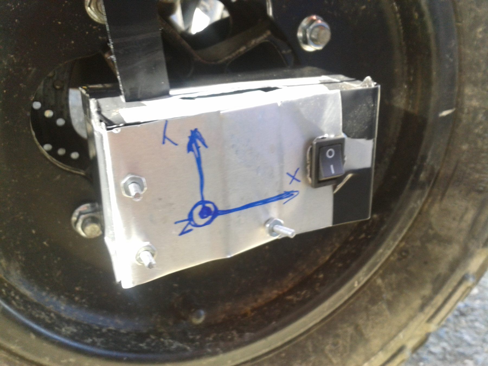
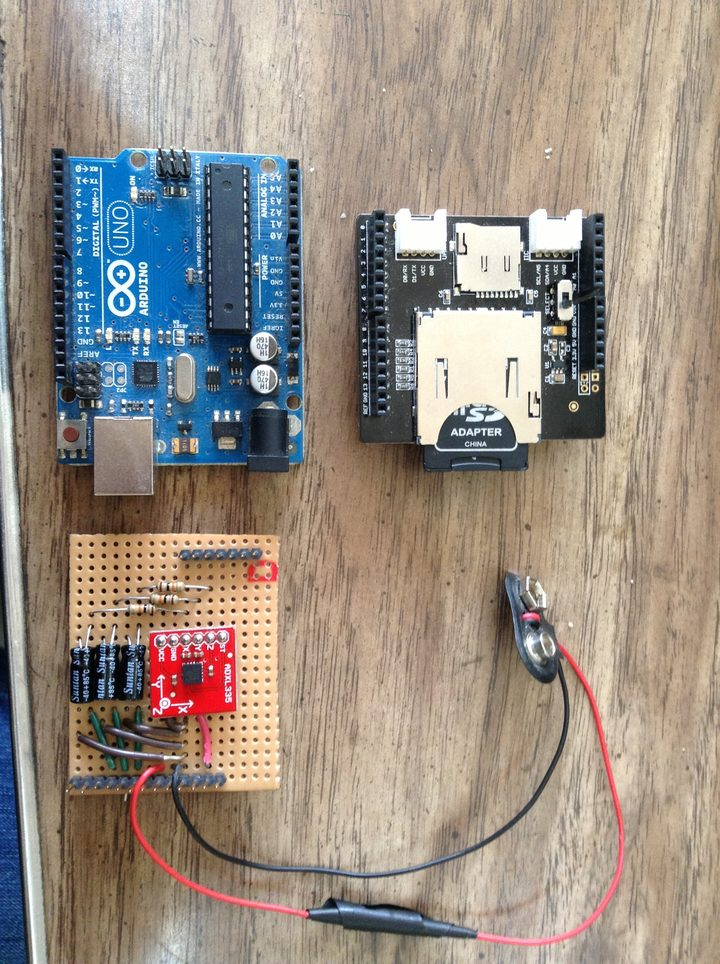
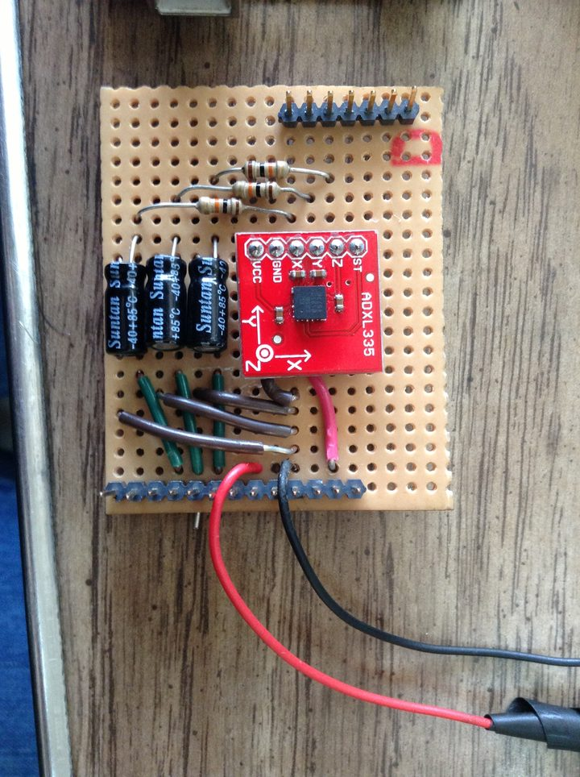
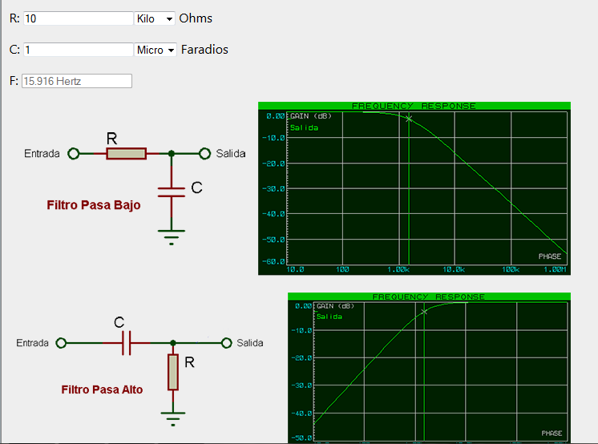
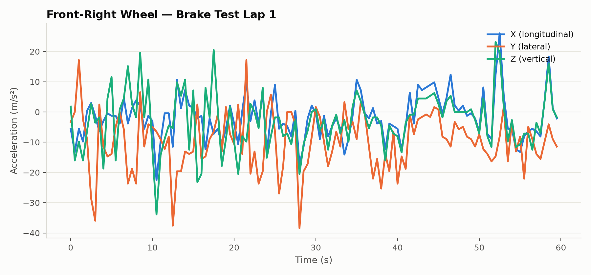

Brake Test Data Logger
An axle‑tip acceleration logger for Baja SAE USB brake tests (Universidad Simón Bolívar, División de Electrónica). A hand‑formed metal box bolts straight onto a wheel hub and logs 3‑axis acceleration to an SD card as the car is driven and braked — closer to the wheel/road interface than a chassis‑mounted sensor, and self‑contained rather than needing a live telemetry link. Another of the Baja SAE USB electronics sub‑systems — December 2013.
Why
The team's existing telemetry system — a prior thesis project built around Freescale MCUs, GPS, a gyroscope, Hall‑effect and IR sensors, and XBee/ZigBee links into a CAN network, all displayed live in LabVIEW — is a full vehicle telemetry suite. For a focused brake test, that's a lot of system to bring up. This logger is the opposite trade‑off: one sensor, one axis of the car, no radio link, no live display — just an accelerometer at the axle tip and a microSD card, small enough to bolt onto a wheel and forget about until the run is over.
Hardware
An ADXL335 (±3 g, 3‑axis, analog output) on a small breakout board, wired into an Arduino Uno together with a microSD “SD Card Shield” over SPI. A single 9 V battery feeds an L7805CV (5 V, for the Arduino) and an LD33V (3.3 V, for the accelerometer), each with 4.7 nF bypass caps.


The full kit — Arduino, SD shield and battery — and a close‑up of the ADXL335 filter board.
Filtering & Calibration
Each axis is filtered twice before it reaches the ADC. The ADXL335 itself has 32 kΩ internal resistors that form an RC low‑pass with whatever capacitor sits on its X/Y/Z pins — the breakout board's 0.1 µF caps put that corner at ≈49.7 Hz. On top of that, each output runs through an external 10 kΩ + 1 µF RC low‑pass, cutting at 15.915 Hz, to knock down high‑frequency vibration from the wheel/road interface before logging.

The external RC low‑pass stage and its simulated response.
The ADXL335 is a raw‑voltage sensor, so each axis still needs its own zero‑offset and scale before the logged counts mean anything. The calibration used here: with the sensor at rest, read the raw ADC count on an axis in two orientations 180° apart (+1 g and −1 g on that axis); the midpoint of the two readings is the zero‑g offset, half their difference is the 1 g scale:
acceleration [m/s²] = ( raw_count − zero_offset ) / scale × 9.80665Mounting
The enclosure — hand‑formed sheet metal, the sensor circuit itself on a bakelite perfboard — bolts directly to a wheel hub through the wheel's own lug holes, putting the accelerometer as close to the axle tip as the hardware allows. The X, Y and Z axes are marked in pen straight on the box so a run's raw log can be matched back to the car's real orientation during analysis; a switch on the side turns logging on and off.
The Data
Runs were driven and braked around Centro San Ignacio in Chacao, Caracas — a reconnaissance lap, then several braking laps per wheel (front‑right, front‑left, rear‑right), each logged as raw TIEMPO,ACEX,ACEY,ACEZ counts to the SD card and converted to m/s² afterwards with the calibration above.

Front‑right wheel, brake‑test lap 1 — X, Y and Z acceleration over one run.
Notes
Mounted directly on the hub, the signal is dominated by wheel rotation and road texture rather than a clean braking signature — there's no obvious single deceleration spike to pick out by eye in the raw trace above; extracting a braking event from this data would need proper filtering or event detection downstream, which this project didn't get to. The logger's own Arduino sketch wasn't preserved in the repository — only its logged output and the analysis spreadsheets survive.
Posted In:
Vehicles